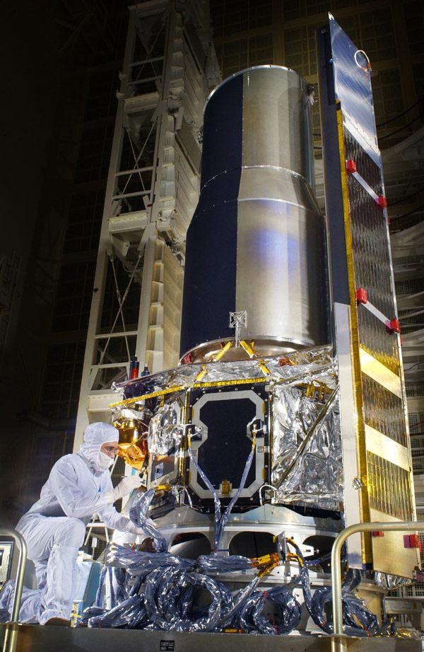
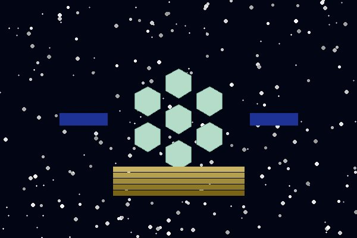

Telescopes
🔭 Windows to the Cosmos

Illustration of the Hubble Space Telescope in low Earth orbit

Illustration of the James Webb Space Telescope, launched in December 2021
The telescope is arguably the most important scientific instrument ever invented. By gathering and focusing light far more than the unaided human eye can collect telescopes have revealed the true scale and structure of the cosmos. From Galileo Galilei’s crude refractor in 1609, which first showed mountains on the Moon and moons orbiting Jupiter, to the orbital observatories of the 21st century, the telescope’s evolution parallels our expanding comprehension of the universe.
Modern astronomy relies on telescopes operating across the full electromagnetic spectrum: not just visible light, but also radio waves, infrared, ultraviolet, X-rays, and gamma rays. Each wavelength reveals different phenomena hidden from optical telescopes, building a comprehensive picture of the universe’s physical processes. Space-based observatories, free from the blurring and absorbing effects of Earth’s atmosphere, provide the sharpest and deepest views of the cosmos.
Cascading Style Sheet Demonstration
The following boxes are styled entirely using the external style sheet
style.css
linked in the <head>
of each page. CSS is used throughout this site to control fonts, colours,
layout, animations, and responsive breakpoints. Below is a demonstration of
some CSS capabilities applied to telescope type badges:
TELESCOPE TYPE BADGES (CSS-Styled):
Optical Radio Infrared Space-BasedEach badge uses border-radius, background, color, and border CSS properties defined in the style.css cascade. The “cascade” in CSS means that styles are applied in order of specificity more specific rules override more general ones.
History of the Telescope
Key milestones in the development of astronomical telescopes:
- 1608 First Patent: Hans Lipperhey of the Netherlands filed the first known patent for a telescope, using two lenses to magnify distant objects. Several other inventors independently developed similar devices around the same time.
- 1609 Galileo’s Observations: Galileo Galilei built his own improved refractor and turned it skyward, discovering lunar craters, the four largest moons of Jupiter, and the phases of Venus.
- 1668 Newton’s Reflector: Isaac Newton designed the first practical reflecting telescope, using a curved mirror rather than a lens to gather light, eliminating chromatic aberration.
- 1937 First Radio Telescope: Grote Reber built the first purpose-built radio telescope in his back yard in Illinois, USA, opening a new window on the universe invisible to optical instruments.
- 1990 Hubble Space Telescope: Launched into low Earth orbit, Hubble provided the first diffraction-limited images of distant galaxies, despite an initial mirror flaw corrected by astronauts in 1993.
- 2021 James Webb Space Telescope: The largest and most powerful space telescope ever built, JWST observes primarily in infrared, enabling it to see the most distant galaxies and peer through dusty stellar nurseries.
Types of Telescopes
- Refractor Telescopes Optical Use a series of lenses to gather and focus light. Simple and low-maintenance, but limited in aperture size due to the difficulty of producing large, high-quality glass lenses.
- Reflector Telescopes Optical Use mirrors to collect light, allowing much larger apertures than refractors. Most large ground-based professional telescopes are reflectors, including the 10-metre Keck telescopes in Hawaii.
- Radio Telescopes Radio Large dish antennas that collect radio waves from astronomical sources. The FAST telescope in China, with a 500-metre diameter, is the world’s largest single-dish radio telescope.
- Infrared Telescopes Infrared Detect infrared radiation, which penetrates gas and dust clouds that block visible light. JWST is the most powerful infrared space telescope ever deployed.
- Space-Based Telescopes Space-Based Operate above Earth’s atmosphere, avoiding atmospheric distortion and absorption. Examples include Hubble, Chandra (X-ray), and Fermi (gamma-ray).
Notable Telescope Comparison
| Telescope | Type | Location | Primary Mirror/Dish | Operational |
|---|---|---|---|---|
| Hubble Space Telescope | Optical / UV / IR | Low Earth Orbit | 2.4 m | 1990–Present |
| James Webb Space Telescope | Infrared | L2 Lagrange Point | 6.5 m | 2022–Present |
| Very Large Telescope (VLT) | Optical | Cerro Paranal, Chile | 4 × 8.2 m | 1999–Present |
| Arecibo Observatory | Radio | Puerto Rico | 305 m | 1963–2020 (Collapsed) |
| FAST | Radio | Guizhou, China | 500 m | 2016–Present |
| Chandra X-ray Observatory | X-ray | Highly Elliptical Orbit | 1.2 m | 1999–Present |
Follow James Webb Space Telescope discoveries at the James Webb Space Telescope official site.